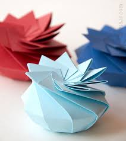
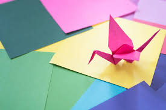
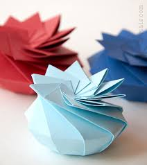
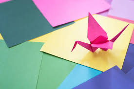

Origami is an ancient art form that is believed to have been around for nearly 2000 years, derived from the Japanese tradition of paper-folding. Though they were not the first to experiment with the culture of paper-folding, they were the first to use this technique as a style of art. As you can imagine, it’s had quite a lucrative history and is deeply embedded in Japanese culture.
For the initial 1500 years or so of its existence, origami was actually known as orikata, a Japanese word that translates to “Folded Paper”. It was in 1880 that the name of the art form was changed to origami, derived from two Japanese words; oru, meaning to fold, and kami, meaning paper. The reason for the change in this term has been attributed to the easiness of writing the characters for this word, which made it more viable to teach to school children.
Origami is a beautiful art which relaxs you and allows you to apply you creativity This art is Beautiful and should always be used everywhere